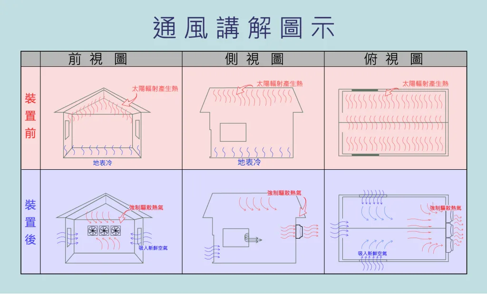

原則上都是利用機械的方式使空間內的壓力產生變化，進而產生空氣的流動與風速。 簡單來說負壓與正壓是一個氣壓的相對值，如內區內的氣壓值較低者即屬於負壓，反之內區內的氣壓值較高者即屬於正壓。可以將房子想像成一個大塑膠袋。在袋子充滿空氣鼓脹時(袋內壓力=袋外壓力)，我們將袋內空氣抽出一部份，會看到袋子開始往內縮扁(袋內壓力變小)，此時外界的空氣便會進入填補這部份真空。
在相對密封的房間工廠內。一側牆壁的負壓風機強行將室內空氣抽出，就會形成暫態相對真空(負壓)，另一面牆上的窗戶有很多孔洞，室外空氣在大氣壓下自動流入室內。因此室內空氣不斷與室外迴圈。如果安裝的合適，室內的所有空氣都會參與這個大循環。※不要小看大氣壓，其實壓力很大的，我們感覺不到那是因為我們適應了這種壓力※ 因此對於污濁、煙霧、灰塵、異味的房間而言，這種通風模式最徹底。透過負壓風機，此時風機對面的空氣經過門和窗戶進入，縱使沒有透過強制降溫處理，室內外空氣的流動也會讓人體有較好的體感涼爽效果。
利用廠內熱氣上升及廠外自然風力驅動球體，將廠內熱氣排出廠外，散熱範圍小，散熱效果極差。
利用空氣對流原理，將廠房熱氣、粉塵等排出廠外，由裝設地點的對向，大門或窗戶補入新鮮空氣，改善悶熱、通風不良、粉塵、異味等問題。
利用空氣對流原理，在大門入風口裝設正壓扇，強制拉入新鮮空氣，再由後端的負壓扇，將空氣排除，讓空間強制換氣，悶熱、通風不良、粉塵、異味問題均可改善。
從入風口拉入新鮮空氣，利用正壓扇接力送風，再由負壓扇排除熱氣，大大減少熱氣在空間中的死角。就好比隧道中送風扇，利用接力順向送風，以達到換氣的效果。
利用在屋頂的負壓扇強制抽風，不受廠外氣流影響，將廠內熱氣、悶氣抽出廠外，效能視廠房高度決定。
空氣穿過水濂時，進入室內的空氣經過適度的蒸發與冷卻，藉由在水濂中的水循環，再搭配負壓式排風機的運作，可使室內的溫度降溫4-6度。
專業建議優先規劃負壓通風系統效果最好。因為負壓通風系統對於引導氣流效果最好，其次再依照現場需求（例如：加強氣流或氣流死角）加裝導流通風系統，目前專業的規劃人員並不會優先規劃正壓通風系統，如在室內擺放風扇或吊掛風扇，都不屬於正壓通風系統，只能稱為導流通風系統。